A marketing system built around real expertise.
Over several years leading marketing for M&S Consulting, I helped turn deep technical knowledge into a steady, recognizable point of view. The work created more ways for people to find the company, and more reasons for its people to share what they know.
From a growing email audience to Human Coded, the brand’s podcast, each channel was designed to reinforce the others. Employee stories, smart social content, and a clearer web experience gave the company an engine it could keep building on.
01 / Human Coded
A podcast for the human side of technology.
Human Coded made room for richer conversations about AI, change, enterprise platforms, and the people behind transformation. It gave M&S a durable, human format for its expertise, and a source of content that travels well across every channel.
Listen to Human Coded
02 / Employee-powered content
Turned employee expertise into momentum.
The strongest stories were already inside the company. I helped create repeatable ways for employees to participate: spotlighting expert perspectives, supporting social sharing, and making it easy to contribute without asking people to become marketers overnight.
The result was a more active presence across employee accounts, more engagement on LinkedIn, and more paths back to M&S.
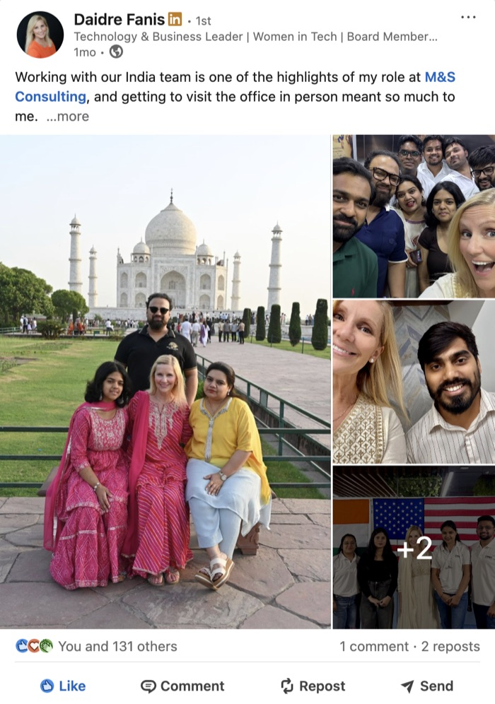
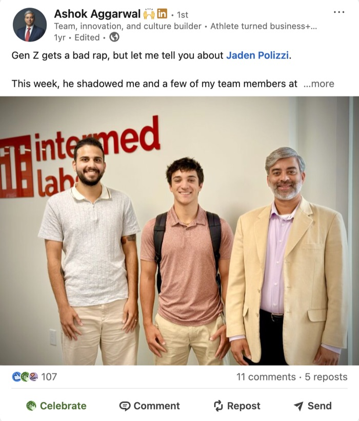
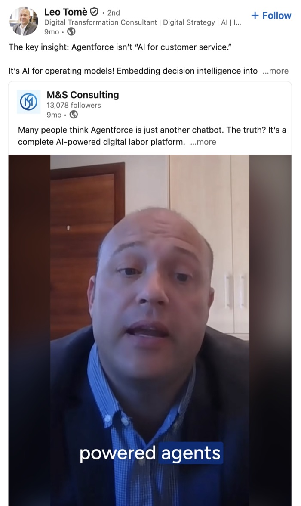
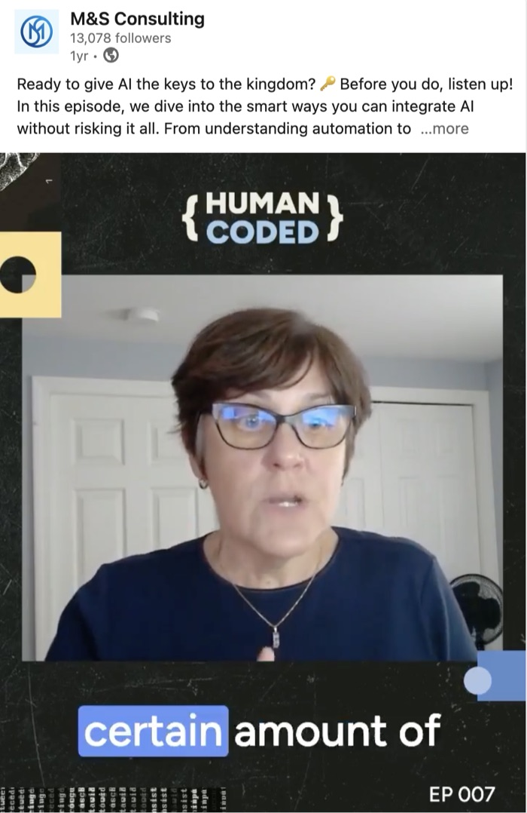
03 / Digital flagship
A site people can actually explore.
This window is a portfolio-friendly take on the real M&S homepage. It shows how a clearer information architecture and sharper storytelling make a big consultancy feel easier to navigate.

Established 2002
Solving people problems is our superpower
We deliver considered AI-first digital solutions for clients and partners.
Who We Are
Done.
At M&S, we focus on getting things done right and on time. Project accountability is built into how we staff and manage every engagement, not bolted on at the end.
Better.
We challenge ourselves to find solutions that may be atypical in your market, developed from seeing what works and what doesn't across government, healthcare, and enterprise.
Together.
We work alongside your team as true partners. Our consultants embed in your organization, take your goals personally, and care about the outcome beyond the contract.
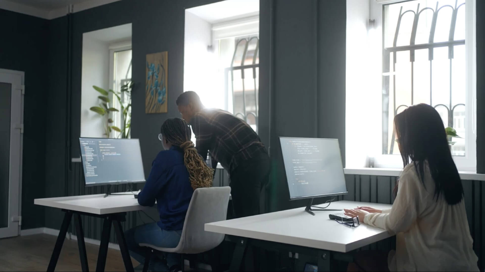
Delivering Digital
Modernization for 24 Years
Since 2002, M&S Consulting has been a trusted partner for both commercial and public sector clients, specializing in digital strategy and transformation for critical business functions.
Our team of over 250 consultants has carved a niche in the industry by seamlessly integrating process and technology. With our depth and breadth of services, we offer decades of experience in identifying, scaling, mobilizing, implementing, and maintaining digital transformation initiatives regardless of where you are on the journey.
What We Do
Working across industries makes us better.
Our exposure to a wide set of industries means we bring solutions that may be atypical in your market, developed from seeing what works and what doesn't across government, healthcare, financial services, and enterprise. The breadth is an advantage we bring to every engagement.

Technology Partners
Service Lines
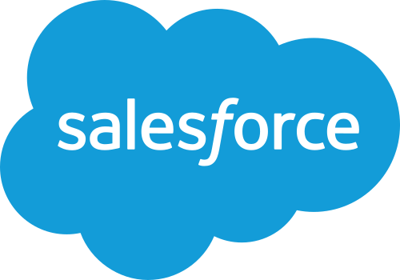
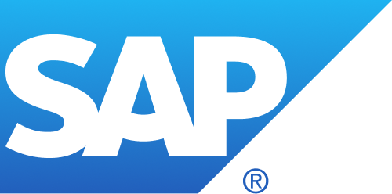
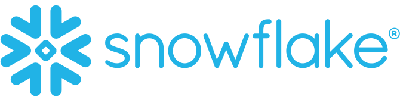
What We Specialize In
Practice Areas
How to Work With Us
Three ways to engage M&S.
01 / Advisory
We assess where you are, identify the right path forward, and deliver a strategy that works, grounded in decades of delivery experience across government and enterprise.
- Technology roadmaps
- Architecture review
- Program assessment
- Culture of excellence
What Our Clients Are Saying
Proof from teams who had to get it right.
“M&S Consulting has been a trusted business partner to me for the last 9 years. They help empower organizations to leverage the technological advancements available. I would recommend them to any organization.”
“Using AI, M&S developed an innovative solution that is much better, much faster, and much less expensive than our previous process. Very rare to get all three benefits at once.”
“Last year we worked 1.8 million hourly hours. This year, we will do the same amount of work in 1.7 million hours. Because of M&S Consulting's tech solutions, we will have a 100,000-hour reduction just by giving people true expectations.”
“M&S resources helped us identify areas for process improvement in correlation with customer requirements. Those resources were Lean Six Sigma trained, and also provided that methodology expertise and support in facilitation of the activities.”
Trusted by teams doing complex work
How ready is your organization for AI?
Answer eight quick questions, about two minutes, and see where you stand on smart adoption. If you are trusting and open, you will get an honest read on your gaps.
8 steps · ~2 minutes · instant results- Readiness scoreA 0-100 score and maturity tier based on your answers.
- Where to startThe roadmap step we recommend tackling first.
- Top prioritiesThe three dimensions that need the most attention.
- Full guideThe complete 8-step AI Roadmap, ready to download.
Collaboration starts
with conversation.
Tell us where you are trying to go. We will tell you honestly what it takes to get there.